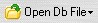
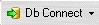

- Choose MS Access File to open a Access Database File
- Choose Local Interbase File to open an Interbase (*.gdb) file.
 You need to have a Local Interbase Server running on your computer, for this to connect to the Interbase File.
You need to have a Local Interbase Server running on your computer, for this to connect to the Interbase File.
Connecting to Database
DbSee allows you to connect to a Database in two different ways:
Click the  button on the Main Toolbar and on the drop down menu that is displayed:
Clicking the  button (not on the Down arrow) on the Main Toolbar displays the Select/Create Connection dialog where you can:
button (not on the Down arrow) on the Main Toolbar displays the Select/Create Connection dialog where you can:
 If you have not setup any database connection, clicking this button takes you directly the Create New Connection dialog.
If you have not setup any database connection, clicking this button takes you directly the Create New Connection dialog.
Quick connect: Clicking on the Down Arrow of the  button displays a menu of the first 8 connections you had setup. Just click on the one you want to connect to.
 Connecting to a Database may take some time depending on the location and size (number of tables, views) of the Database. The left most panel on the status bar displays the connection status while connecting and when connected.
Connecting to a Database may take some time depending on the location and size (number of tables, views) of the Database. The left most panel on the status bar displays the connection status while connecting and when connected.
Created with the Freeware Edition of HelpNDoc: Full featured Documentation generator